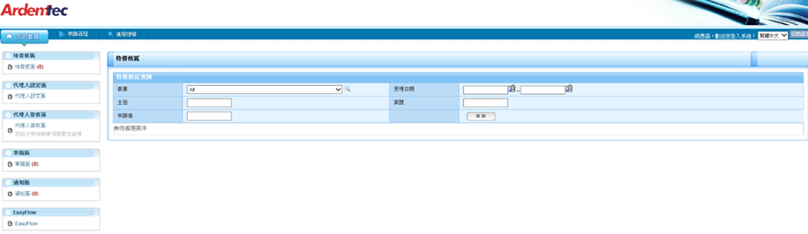

(1)Workflow
Workflow 是進公司第一個操作的系統，用來管理公司內部表單的簽核動作，依照各部門的工作性質提供各式表單，以便進行作業並控管作業流程和資料管理；Workflow可以說是是公司裡各個部門的溝通媒介，例如我剛進公司的時候需要申請電腦時和電話，就是透過workflow填寫分類在MIS類別裡的MIS軟硬體申請表單，在表單裡面填寫好需求內容及原因，按下送出，就開始簽核流程，

(2)Deltaflow
Deltaflow系統和Workflow一樣是屬於ERP系統，Deltaflow裡的表單主要是由Asp.net c#撰寫，而workflow上的表單則是由VbScript來撰寫，由於新版IE已經不支援VbScript程式，因此公司將循序workflow上的表單移轉到Deltaflowg上。 目前Deltaflow裡面提供做作業項目是:人資部部門的員工資料申請表、員工門禁權限新增/修改或是FAEQP 的固定資產處分申請單、固定資產進廠申請單……等。
(1)程式需求單
表單用途是讓USER提出新增修改刪除表單的途徑，MIS人員根據使用者提出的的要求對隊流程和表單功能進行分析和評估是否可行性；程式需求單是我在公司第一個接觸到的程式，由ASP.NET C#撰寫，在寫程式之前，需要明確的了解功能新增/修改功能背後的意義：需要清楚哪一個關卡需做哪一些功能、這些功能背後的邏輯是什麼，功能在表上的呈現方式是什麼，資料的流向為何…….等，需要對一整個流程有充分的了解，找出可能出現的問題，是否因為修改的哪一些功能，而影響到原本不需修改的功能，這些都是在撰寫程式之前需做的分析。
(2)WLCSP
這個表單的功能原本隸屬於workflow裡面的跨機需求單中的其中一項功能，不同於上一支的程式需求單單純修改別人已經撰寫好的程式，這一次我需要從頭開始寫起，不管是SA文件還是程式； 因為這支表單是屬於生管、PC、TPE部門，在做跨機時需要使用的表單， 在開會的時候與主管討論，遇到問題何無法清楚的部份， 則另訂了時間與USER進行了會議討論， 在和USER討論之前我的SA文件需要包含流程圖、簽核流程圖、TABLE SCHEMA(要儲存到資料庫裡的資料名稱、資料型態、功能論述) 、每一個關卡的功能邏輯論述、還有用EXCEL繪製的表單模擬圖，做好完全的準備才能和USER進行討論， 討論完畢之後整理會議結果，再次進行SA文件的修改。
若在修改的問題中發現一些會議上沒有討論到的內容(例如之後報表問題)則改用E-MAIL或電話與USER進行溝通
撰寫完SA文件後，就是要進行排定工作表，排定好計劃之後就要按照這個進度表依序完成工作，工作進度內容因人而異，內容主要是工作項目、工作天的預計天數、工作開始的日期、目前狀況等項目
程式撰寫使用的語言是ASP.NET C#，在撰寫前端畫面的時候也會使用到Javascript，開發環境為visual studio2015。 前端撰寫主要撰寫的項目是：建立表單序號、初始化申請者的資訊，並且從資料庫撈出資料自動顯示申請者的資訊、進行表單畫面排版，必填欄位的*號，以及必填表格的卡關，若有未填的表格則不可以讓申請人遞送表單，並且視窗會跳出message box 提醒使用者未填或未完成的動作為何，以及元件見連結的部份，例如公司裡的日期元件，並不是使用visual studio 裡的日期元件，而是公司內部為了因應需求而自行撰寫的元件，還有選擇部門員工的開窗選的單元件，根據每一個表單的不同需求，需要自行撰寫元件要撈出資料庫的哪一筆資料，以及在開窗選單會顯示出哪些資訊，例如部門代號、員工的工號、員工姓名…….等，也要判斷是否是在呼叫的資料庫是在SQL還是Oracle，可以從舊的程式找尋參考資料。目前正在進行的WLCSP表單格式為新的表單格式，排版需要為手機也能支援的格式。 後端的程式主要是撰寫：表單上功能在不同關卡的控制機制，例如那些功能應該在哪一些關卡顯示，或是功能需要出現，但是不可以被其他關卡的使用者更改，還控制是使用者輸入的資料與資料庫的連結、資料顯示何儲存、刪除功能，例如GridView功能，在公司裡撰寫的gridview也並非始用visual studio 裡的GridView 元件，而是要自行撰寫資料的儲存、存入資料庫、在GridView中顯示資料，並且讓user編輯和刪除資料，在撰寫的過程中需要呼叫公司內部流程的儲存function